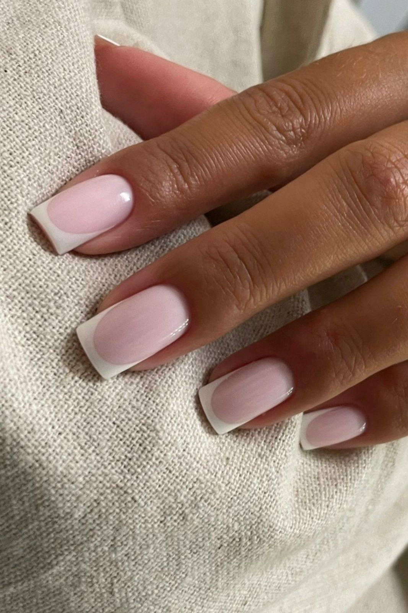

Услуги и цены
Пять услуг: от обработки до наращивания.
Цены указаны в рублях.
Большая Вруда
Приглашаю к себе на маникюр Большая Вруда

Маникюр, покрытие, френч и наращивание в Большой Вруде.
Работаю не на количество, а на качество.
Пять услуг: от обработки до наращивания.
Цены указаны в рублях.
Нюд и френч, неон и матовый градиент.
Нажмите на фото, чтобы открыть его крупно.
Удобнее всего написать во ВКонтакте или в Max.
Записаться можно сообщением во ВКонтакте или в Max либо по телефону.
Мастер не всегда может ответить на звонок, в ВК или Max писать удобнее.
Большая Вруда, д. 51
Вход со стороны аптеки
Открыть на Яндекс Картах